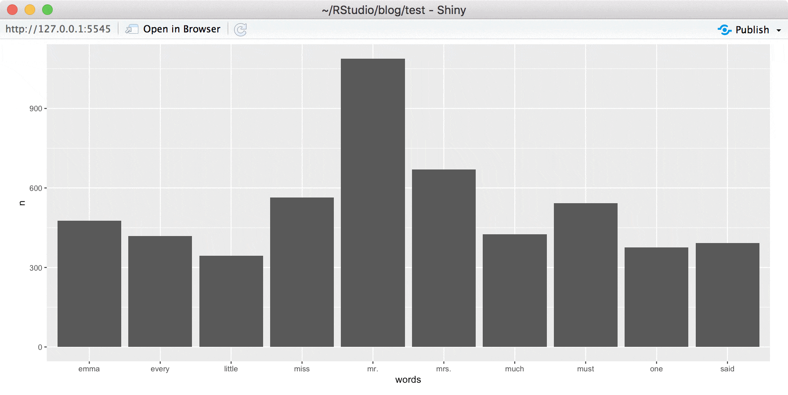

2018-10-01
Today we are excited to share that a new release of sparklyr is available on CRAN! This 0.9 release enables you to:
sparklyr to simplify deployment and maintenance.In addition, sparklyr 0.9 adds support for Spark 2.3.1 and Spark 2.2.3 and extends broom models in sparklyr. An extensive list of improvements and fixes is available in the sparklyr NEWS file.
Spark structured streams provide parallel and fault-tolerant data processing, useful when analyzing real time data. You create a stream in sparklyr by defining sources, transformations and a destination:
stream_read_*() functions to read streams of data from various data sources.dplyr, SQL, scoring pipelines or R code through spark_apply().stream_write_*() functions, it is often also referenced as a sink.For instance, after connecting with sc <- spark_connect(master = "local"), the simplest stream we can define is one to continuously copy text files between a source folder and a destination folder as follows:
stream_read_text(sc, "source/") %>% stream_write_text("destination/")Stream: 1857a67b-38f7-4f78-8a4c-959594bf0c70
Status: Waiting for next trigger
Active: TRUEOnce this is executed, sparklyr creates the stream and starts running it; the stream will be destroyed when the R session terminates or when stream_stop() is called on the stream instance.
There are many useful use cases for streams. For example, you can use streams to analyze access logs in an Amazon S3 bucket in real time. The following example creates a stream over an S3 bucket containing access logs, parses the log entries using the webreadr through spark_apply(), finds the most accessed objects using dplyr and, writes the results into an in-memory data frame:
urls_stream <- stream_read_text(sc, "s3a://your-s3-bucket/") %>%
spark_apply(
~webreadr::read_s3(paste(c(.x$line, ""), collapse = "\n")),
columns = lapply(webreadr::read_s3("\n"), class)
) %>%
group_by(uri) %>%
summarize(n = n()) %>%
arrange(desc(n)) %>%
stream_write_memory("urls_stream", mode = "complete")Now that the urls_stream is running, we can view data being processed through:
stream_view(urls_stream)
You can also easily display streaming data using Shiny. Use the sparklyr::reactiveSpark() function to create a Shiny reactive from streaming data that can then be used to interact with other Shiny components and visualizations.
For instance, we can create a Shiny app using Spark streams that counts words from text files under a source/ folder as follows:
library(shiny)
library(sparklyr)
library(ggplot2)
library(dplyr)
sc <- spark_connect(master = "local")
dir.create("source")
reactiveCount <- stream_read_text(sc, "source/") %>%
ft_tokenizer("line", "tokens") %>%
ft_stop_words_remover("tokens", "words") %>%
transmute(words = explode(words)) %>%
filter(nchar(words) > 0) %>%
group_by(words) %>%
summarize(n = n()) %>%
arrange(desc(n)) %>%
filter(n > 100) %>%
reactiveSpark()
ui <- fluidPage(plotOutput("wordsPlot"))
server <- function(input, output) {
output$wordsPlot <- renderPlot({
reactiveCount() %>%
head(n=10) %>%
ggplot() + aes(x=words, y=n) + geom_bar(stat="identity")
})
}
shinyApp(ui = ui, server = server)We can then write Jane Austen’s books to this folder starting with writeLines(janeaustenr::emma, "source/emma.txt") and similar code for the remaining ones, each time a book is saved, the Shiny app updates accordingly:

You can learn more about sparklyr streaming at https://spark.rstudio.com/guides/streaming/.
In sparklyr 0.9, you can now gracefully interrupt long-running operations and reuse the Spark connection to execute other operations. This is useful when you execute a query or modeling function that is taking longer than expected, or when you didn’t quite execute the code you wanted to. For example:
# Stop the following long-running operation with `ctrl+c` or 'stop' in RStudio
sdf_len(sc, 10) %>% spark_apply(~ Sys.sleep(60 * 10))
# Start a new operation without having to restart the Spark context.
sdf_len(sc, 10)While running sparklyr 0.9 under RStudio Preview 1.2, long running jobs will be displayed in the console tab and under the Jobs panel:

sparklyr 0.9 enables support for Kubernetes. A cluster from a properly configured client can be launched as follows:
sc <- spark_connect(config = spark_config_kubernetes("k8s://hostname:8443"))Please note that Spark on Kubernetes requires a proper container image, see ?spark_config_kubernetes for details. In addition, Kubernetes support was just added in Spark 2.3.0 and the Kubernetes scheduler is currently experimental in Spark.
We hope you enjoy all new features in sparklyr 0.9! You can read more about these features and others at https://spark.rstudio.com/, get help from the R community at https://community.rstudio.com/tags/sparklyr, and report issues with sparklyr at https://github.com/rstudio/sparklyr.